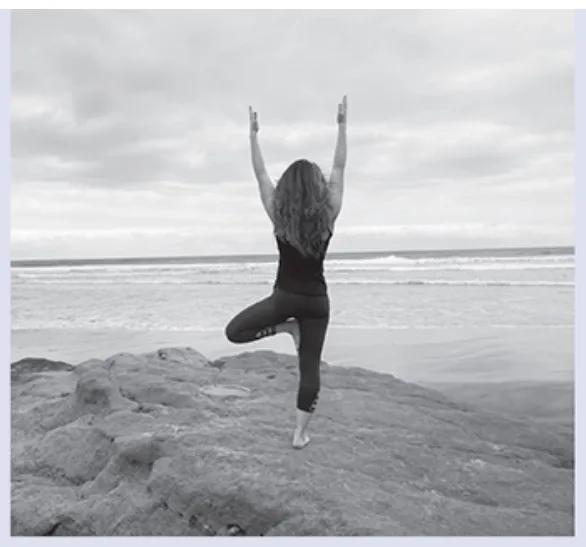
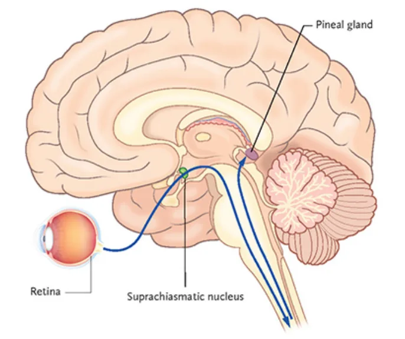
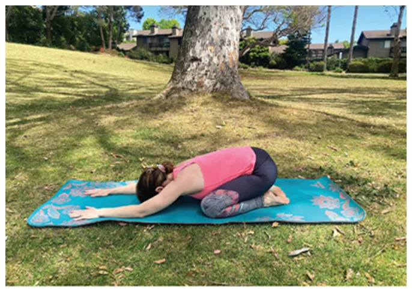
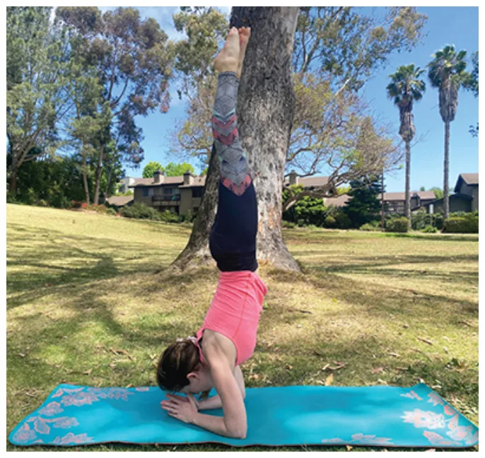
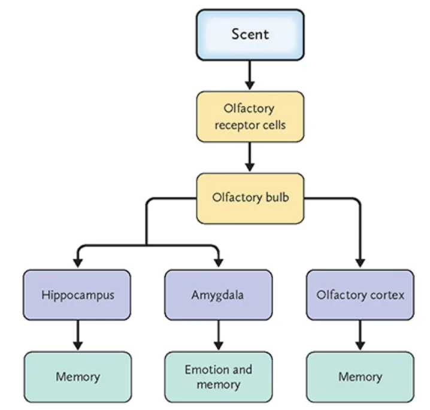
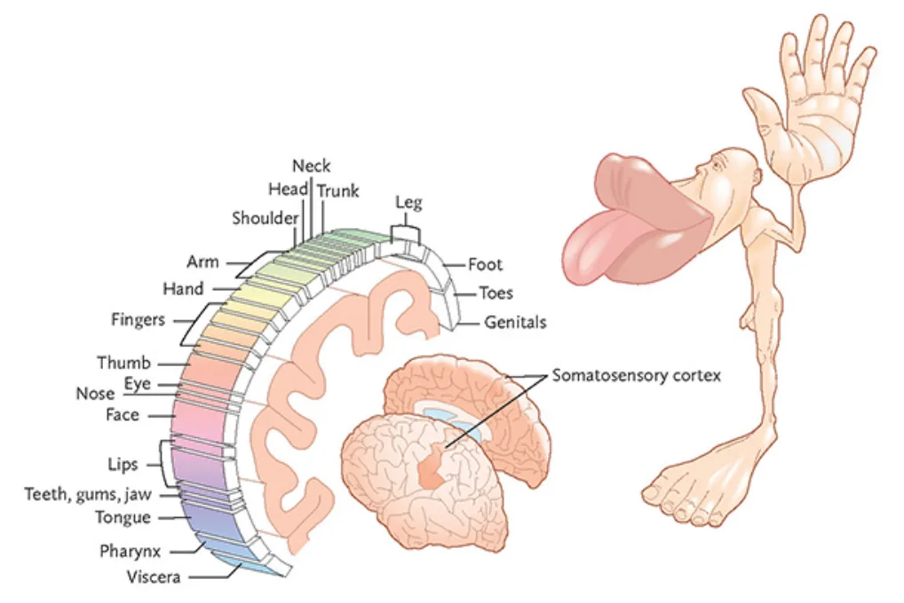

Chương 4 — Trải nghiệm giác quan của Yoga và Thiền định
CHƯƠNG 4
Trải nghiệm Giác quan của Yoga và Thiền định
Các giác quan là một phần thiết yếu của mọi trải nghiệm yoga và thiền định. Chúng là những cánh cổng giúp cơ thể cảm nhận môi trường bên ngoài. Việc kết hợp các giác quan vào quá trình thực hành có thể làm tăng cường độ của trải nghiệm và tạo nên những ký ức sống động. Chương này cung cấp cái nhìn tổng quan ngắn gọn về từng giác quan và cách chúng đóng vai trò là các cảm biến của não bộ. Kiến thức này có thể giúp làm sâu sắc thêm tác động từ quá trình thực hành của chính bạn (Hình 4.1).

Hình 4.1 Thực hành yoga nhóm trên bãi biển.
Nguồn: Kaylee Garrett trên Unsplash.
THỊ GIÁC
Khi bước vào một phòng tập yoga và nhìn quanh để tìm chỗ, hàng nghìn tín hiệu được gửi từ các tế bào thần kinh trong mắt đến trung tâm thị giác của não bộ – vỏ não thị giác. Những tế bào thần kinh này tiếp tục truyền thông tin trong lúc bạn quan sát người hướng dẫn ở phía trước phòng tập và liếc nhìn cơ thể để đảm bảo tư thế được căn chỉnh chính xác. Chúng ta thường dựa vào đôi mắt khi tập yoga, nhưng thị giác hoạt động như thế nào?
Đôi mắt là bộ phận đầu tiên của cơ thể tiếp nhận và xử lý ánh sáng. Khi ánh sáng đi vào mắt, nó đi qua giác mạc, một lớp màng ngoài trong suốt và có chức năng bảo vệ, giúp hội tụ ánh sáng ban đầu. Sau đó, ánh sáng đi qua thủy tinh thể, bộ phận thực hiện việc hội tụ tinh chỉnh hơn để chiếu ánh sáng lên võng mạc ở phía sau mắt. Mống mắt và đồng tử kiểm soát lượng ánh sáng được phép đi vào phía sau mắt (Hình 4.2).
Võng mạc được bao phủ bởi khoảng 125–150 triệu tế bào thần kinh gọi là tế bào cảm quang, có nhiệm vụ thu thập thông tin về ánh sáng đi vào và chuyển đổi thông tin đó thành tín hiệu điện (Alexiades và Khanal, 2007). Sau đó, các tế bào cảm quang truyền những tín hiệu này đến các tế bào thần kinh khác trong võng mạc.
Hai loại tế bào cảm quang chính được gọi là tế bào hình que và tế bào hình nón. Tế bào hình que nhạy cảm với ánh sáng và giúp chúng ta nhìn thấy vào ban đêm hoặc ở những nơi thiếu sáng, trong khi tế bào hình nón chịu trách nhiệm về thị giác màu sắc và các chi tiết. Có ba loại tế bào hình nón giúp nhận biết các màu đỏ, xanh lục và xanh lam, tương tự như màu sắc của các điểm ảnh trên màn hình tivi hoặc máy tính. Các tế bào hình nón phối hợp với nhau để truyền tải thông tin về mọi màu sắc có thể nhận biết được.

Hình 4.2 Giải phẫu của mắt.
Các tế bào thần kinh trong võng mạc sau đó gửi tín hiệu đến dây thần kinh thị giác, dây thần kinh này dẫn truyền thông tin dọc theo dải thị giác đến vỏ não thị giác ở thùy chẩm. Não bộ không chỉ mã hóa hình dạng, chuyển động và màu sắc; nó còn có thể sử dụng thông tin thị giác này để xây dựng ký ức về các trải nghiệm thị giác của chúng ta. Vỏ não thị giác gửi tín hiệu đến thùy đỉnh để xử lý vị trí (“ở đâu”) của sự vật trong không gian. Nó cũng gửi tín hiệu đến thùy thái dương để xử lý thông tin về đối tượng (“cái gì”), chẳng hạn như đồ vật và khuôn mặt. Quá trình xử lý ở thùy thái dương có mối liên hệ chặt chẽ với các trung tâm trí nhớ, bao gồm cả hồi hải mã.
Mù lòa và suy giảm thị lực Mù lòa và suy giảm thị lực có thể do nhiều yếu tố gây ra, bao gồm di truyền, chấn thương và các thay đổi liên quan đến tuổi tác như đục thủy tinh thể và tăng nhãn áp. Suy giảm thị lực có thể ở mức độ nhẹ, trung bình hoặc nặng, trong đó mù lòa là tình trạng thị lực gần như bằng không hoặc mất thị lực hoàn toàn.
Thị giác không phải là điều kiện bắt buộc để tập yoga. Đối với một số người tập yoga, việc không phụ thuộc vào đôi mắt có thể giúp họ hướng sự chú ý vào bên trong một cách dễ dàng hơn.

Hình 4.3 Tư thế cái cây.
Khi dạy yoga cho những người khiếm thị, thị lực kém hoặc suy giảm thị lực, có một vài điều cần lưu ý. Chẳng hạn, một nghiên cứu về yoga đối với thanh thiếu niên khiếm thị và thị lực kém cho thấy học viên ưa thích sự hướng dẫn trực tiếp bằng tiếp xúc vật lý cho các tư thế asana hơn các chiến lược giảng dạy khác (Mohanty và cộng sự, 2016).
Mẹo giảng dạy cho người khiếm thị hoặc suy giảm thị lực
Sử dụng các chỉ dẫn bằng lời nói mang tính mô tả trong suốt buổi học. Nếu học viên cho phép, hãy hỗ trợ điều chỉnh bằng tiếp xúc vật lý. Hỏi thăm cảm nhận của học viên bằng cách đặt câu hỏi “bạn cảm thấy thế nào?”. Sử dụng dụng cụ hỗ trợ hoặc mùi hương để tăng cường các giác quan khác.
CON MẮT THỨ BA
Nhiều người thực hành và nhà chữa lành tâm linh tin rằng, bên cạnh đôi mắt vật lý, còn có một con mắt thứ ba mang tính biểu tượng nằm ở giữa trán. Mặc dù quan điểm này không dễ dàng tương thích với y học phương Tây, nhưng theo truyền thống yoga, đôi mắt vật lý nhìn ra thế giới bên ngoài, trong khi con mắt thứ ba lại hướng vào bên trong. Ý niệm về con mắt thứ ba tồn tại trong nhiều nền văn hóa và tôn giáo khác nhau, chẳng hạn như tuệ nhãn thường thấy ở nhiều vị thần trong Phật giáo và thần Shiva trong Ấn Độ giáo. Con mắt thứ ba đại diện cho ý thức, tri thức tâm linh và trí tuệ.
Khái niệm về con mắt thứ ba cũng là một phần quan trọng trong hệ thống luân xa, tức bảy xoáy năng lượng phân bố khắp cơ thể (Hình 4.4). Theo truyền thống yoga, luân xa con mắt thứ ba, còn gọi là luân xa ajna, có thể hỗ trợ khả năng hình dung, giao tiếp tâm linh và trực giác. Một số người tin rằng nó có thể thiết lập sự kết nối giữa thế giới bên trong và bên ngoài. Khi luân xa con mắt thứ ba rộng mở và thông suốt, nó có thể mang lại sự sáng suốt và thấu thị. Sự mất cân bằng ở luân xa này được cho là gây ra các vấn đề về mắt hoặc thị lực, cũng như chứng mất ngủ và đau đầu (Jain, 2020).

Hình 4.4 Bảy luân xa.
Theo truyền thống yoga, tuyến tùng được coi là thành phần sinh học của con mắt thứ ba. Tuyến tùng là một tuyến nhỏ nằm sâu bên trong não, có chức năng xử lý thông tin về ánh sáng và bóng tối. Do đó, nó hoạt động như một
“con mắt thứ ba” để cảm nhận thế giới. Tuyến tùng nặng chưa đến 0,2 gam và tiết ra serotonin, melatonin cùng N,N-dimethyltryptamine, những chất ảnh hưởng đến cơ thể theo nhiều cách khác nhau (Nichols, 2017; Gheban, Rosca và Crisan, 2019). Tuyến nhỏ này có các tế bào chuyên biệt giúp điều hòa chu kỳ thức – ngủ 24 giờ (gọi là nhịp sinh học) bằng cách tiết ra hormone melatonin (Malpaux và cộng sự, 2001). Melatonin được tiết ra trong khoảng thời gian tối và bị ức chế bởi ánh sáng.

Hình 4.5 Võng mạc, nhân trên chéo của vùng dưới đồi và tuyến tùng.
Khi ánh sáng chiếu vào võng mạc của mắt, thông tin về thị giác được gửi đến một nhóm tế bào thần kinh ở vùng dưới đồi gọi là nhân trên chéo (suprachiasmatic nucleus), vốn là đồng hồ sinh học bên trong cơ thể (Moore, Speh và Leak, 2002). Từ nhân trên chéo, thông tin được gửi đến một nhóm tế bào thần kinh gọi là hạch cổ trên ở vùng cổ trước khi truyền đến tuyến tùng (Moore, 1995) (Hình 4.5).
Tuyến tùng cũng tiết ra N,N-dimethyltryptamine (DMT), một chất gây ảo giác cực mạnh. Một số nhà khoa học thần kinh tin rằng DMT được tiết ra trong trải nghiệm được sinh ra, khi sinh con và ngay trước khi chết (Gheban, Rosca và Crisan, 2019), trong khi các nhà khoa học khác khẳng định rằng lượng DMT do tuyến tùng tiết ra không đủ để tạo ra bất kỳ tác dụng hướng thần nào (Nichols, 2017). Tuy nhiên, việc giải phóng DMT trong não có liên quan đến các trải nghiệm cận tử, nơi mọi người tường thuật lại việc trải qua các hiện tượng siêu nhiên. DMT có thể mở ra một cầu nối khác liên kết khía cạnh sinh lý với tâm linh, nhưng điều này vẫn chưa được khoa học chứng minh.
Những điểm chính cần nhớ
Các tế bào cảm quang trong mắt truyền tín hiệu đến thùy chẩm để cung cấp thông tin thị giác. Các chỉ dẫn bằng lời nói mang tính mô tả và hỗ trợ điều chỉnh bằng tiếp xúc vật lý là những chiến lược giảng dạy hữu ích khi hướng dẫn lớp học cho người suy giảm thị lực. Luân xa con mắt thứ ba có liên quan đến tuyến tùng, cơ quan điều hòa nhịp sinh học.
Các tư thế tập trung vào con mắt thứ ba được cho là có tác dụng đánh thức luân xa con mắt thứ ba. Điều này bao gồm những tư thế chạm trực tiếp vào giữa trán cũng như những tư thế đưa trán chạm sàn để tạo áp lực nhẹ nhàng lên vùng này. Dưới đây là một chuỗi bài tập mẫu gồm các tư thế có thể giúp kích hoạt luân xa ajna nhằm mang lại sự sáng suốt, thấu thị và trí tuệ.
CHUỖI TƯ THẾ YOGA MẪU ĐỂ KÍCH THÍCH LUÂN XA CON MẮT THỨ BA

Hình 4.6 Quỳ gối với hai ngón tay cái ấn nhẹ vào con mắt thứ ba.

Hình 4.7 Tư thế em bé.

Hình 4.8 Biến thể tư thế cá heo.

Hình 4.9 Biến thể tư thế đại bàng.

Hình 4.10 Biến thể tư thế đứng bằng cẳng tay.
THÍNH GIÁC
Việc lắng nghe hướng dẫn của giáo viên yoga hoặc nghe tiếng “Om” trong một buổi thiền nhóm là những phần quan trọng của nhiều phương pháp thực hành chiêm nghiệm. Để nghe được âm thanh, não bộ xử lý các sóng âm, vốn được truyền dẫn và khuếch đại qua một chuỗi các màng, chất lỏng và xương.
Chướng ngại đầu tiên mà sóng âm gặp phải là màng nhĩ. Khi sóng âm đập vào màng nhĩ, lớp màng này bắt đầu rung động. Quá trình này chuyển đổi sóng âm thành các rung động. Tai trong chứa ba xương nhỏ gọi là xương búa, xương đe và xương bàn đạp giúp phát hiện những rung động này. Gọi chung lại, ba xương này được biết đến là chuỗi xương con thính giác (Hình 4.11).

Hình 4.11 Chuỗi xương con thính giác bao gồm xương búa, xương đe và xương bàn đạp.
Suy giảm thính lực, điếc và thiết bị trợ thính Suy giảm thính lực và điếc có thể xảy ra do nhiều nguyên nhân, bao gồm yếu tố di truyền, nhiễm trùng tai trong hoặc chấn thương vùng đầu. Suy giảm thính lực có thể ở mức độ nhẹ, trung bình, nặng hoặc sâu, trong khi điếc thường được định nghĩa là hầu như không nghe thấy hoặc mất thính lực hoàn toàn.
Có lẽ bạn đã từng làm việc với một học viên đeo máy trợ thính hoặc ốc tai điện tử. Máy trợ thính giúp những người suy giảm thính lực bằng cách khuếch đại âm thanh để nghe lớn hơn. Ốc tai điện tử được sử dụng cho những người bị mất thính lực nghiêm trọng. Thiết bị cấy ghép này hoạt động bằng cách đặt một bộ xử lý phía sau tai và một bộ thu bên trong ốc tai ở tai trong. Khi bộ xử lý thu nhận tín hiệu âm thanh, nó gửi tín hiệu đó đến bộ thu, từ đó kích thích dây thần kinh thính giác gửi tín hiệu lên não.
Yoga và thiền định có thể làm giảm các triệu chứng của chứng ù tai, một tình trạng có tiếng kêu trong tai thường đi kèm với suy giảm thính lực, đồng thời cải thiện đời sống hằng ngày của những người điếc và khiếm thính (Curtis và Leppla, 2018; Gunjawate và Ravi, 2021).
Mẹo giảng dạy cho người suy giảm thính lực hoặc điếc
Giúp học viên tìm một vị trí trung tâm trong phòng để họ có thể quan sát trực quan chuyển động của những người khác. Cung cấp các chỉ dẫn bằng hình ảnh bên cạnh chỉ dẫn bằng lời nói trong suốt buổi học. Hướng mặt về phía học viên khi bạn nói để họ có thể đọc khẩu hình miệng. Giữ đèn sáng trong suốt buổi học để việc tiếp nhận chỉ dẫn trực quan và đọc khẩu hình miệng có thể diễn ra thuận lợi.
Các rung động đầu tiên tác động vào xương búa, xương này kết nối với cả màng nhĩ và xương đe. Xương búa chuyển động qua lại nhờ các rung động của màng nhĩ. Hoạt động này làm chuyển động xương đe, từ đó ấn vào xương bàn đạp. Xương bàn đạp đẩy vào ốc tai, tạo ra các làn sóng chất lỏng bên trong ốc tai.
Các tế bào nhỏ, chuyên biệt gọi là tế bào lông sau đó cảm nhận chuyển động của chất lỏng và giải phóng các chất dẫn truyền thần kinh. Các chất dẫn truyền thần kinh phát tín hiệu để các tế bào thần kinh phát xung điện, và thông tin về âm thanh được truyền đến vỏ não thính giác, nằm ở thùy thái dương của não bộ. Sau quá trình xử lý ban đầu này, thông tin được gửi đến các vùng khác của não, chẳng hạn như vỏ não trán, để diễn giải sâu hơn các tín hiệu âm thanh.
Âm nhạc và não bộ Giáo viên yoga thường sử dụng âm nhạc để tạo không khí cho lớp học, và việc nghe nhạc tác động đến não bộ theo những cách phức tạp. Âm nhạc kích hoạt con đường phần thưởng của não bộ, làm giải phóng chất dẫn truyền thần kinh dopamine. Dopamine có thể mang lại cảm giác hưng phấn, đó là lý do tại sao việc nghe nhạc lại mang lại khoái cảm.
Âm nhạc cũng kích hoạt các trung tâm trí nhớ trong não. Các nhà khoa học đã phát hiện ra rằng việc nghe một bài hát yêu thích làm thay đổi sự giao tiếp giữa các vùng não thính giác và hồi hải mã, vùng kết nối ký ức với cảm xúc (Wilkins và cộng sự, 2014). Kết nối não bộ này giúp ta dễ dàng ghi nhớ lời của một bài hát yêu thích.
Liệu pháp âm nhạc và tắm âm thanh Âm thanh đã được sử dụng hàng nghìn năm qua ở nhiều nền văn hóa như một phương thức chữa lành. Liệu pháp âm nhạc được coi là một trong những hình thức chữa lành lâu đời nhất mà chúng ta từng biết (Heather, 2007). Nó có thể mang lại lợi ích cho những người mắc nhiều tình trạng khác nhau, bao gồm trầm cảm (Erkkilä và cộng sự, 2011), lo âu (Gómez Gallego và Gómez García, 2017), các rối loạn thần kinh như bệnh Parkinson (Devlin, Alshaikh và Pantelyat, 2019), tự kỷ (Geretsegger và cộng sự, 2014) và những người đang phục hồi sau chấn thương sọ não (Siponkoski và cộng sự, 2020).

Hình 4.12 Chuông xoay (singing bowls).
Nguồn: Sven Mieke trên Unsplash.
Mặc dù có lịch sử sử dụng lâu đời và nhiều nghiên cứu chứng minh giá trị của nó, bằng chứng giải thích lý do tại sao âm thanh có lợi cho cơ thể vẫn còn hạn chế. Một số nhà nghiên cứu lập luận rằng giọng nói, tiếng trống, âm thoa, chuông xoay hoặc các nhạc cụ khác giúp điều chỉnh và đồng bộ hóa các tần số của cơ thể (Hình 4.12). Các nhà nghiên cứu tại Đại học California, Santa Barbara đã phát triển “lý thuyết cộng hưởng của ý thức”, mô tả cách các rung động đồng bộ tạo ra ý thức thông qua việc các tế bào thần kinh phát xung ở những tần số cụ thể (Hunt, 2018). Khi hai vật thể được đặt gần nhau, chúng sẽ đồng bộ hóa về cùng một tần số trong một quá trình gọi là “tự tổ chức tự phát”. Âm nhạc có thể giúp dịch chuyển những rung động này, mang lại hiệu ứng hài hòa và êm dịu (Heather, 2007). Âm thanh có thể đồng bộ hóa hoạt động phát xung của các tế bào thần kinh bằng cách cung cấp một tần số ổn định (Abhang, Gawali và Mehrotra, 2016; Martinez, 2021). Người thực hành có thể thay đổi tần số và nhịp điệu của âm thanh để chuyển sóng não từ trạng thái dao động beta (tỉnh táo) sang trạng thái alpha (thư giãn) hoặc theta (thiền định) (Martinez, 2021). Tuy nhiên, cần có thêm nhiều nghiên cứu để xác nhận những phát hiện này.
Một loại hình chữa lành bằng âm thanh khác là thiền có hướng dẫn, trong đó giọng nói của người thực hành hoặc giáo viên đóng vai trò là âm thanh. Thiền có hướng dẫn khơi gợi phản ứng thư giãn, đưa cơ thể vào trạng thái bình tĩnh. Nhiều nghiên cứu đã chỉ ra rằng thiền có hướng dẫn thúc đẩy sức khỏe tinh thần, cảm xúc và thể chất (Melville và cộng sự, 2012).
Tụng niệm Tụng niệm đã được sử dụng hàng nghìn năm trên toàn cầu để thúc đẩy sự thư giãn, cảm giác gắn kết cộng đồng và tâm linh. Tụng niệm được xem là một kỹ thuật thiền tập trung sự chú ý, vì người thực hành hướng sự chú ý của mình vào âm thanh (Simpson, Perry và Thompson, 2021). Âm thanh này còn được gọi là mantra (thần chú), và có thể được lặp lại thành tiếng hoặc thầm trong tâm trí.
Mặc dù có tương đối ít nghiên cứu về tác động của việc tụng niệm lên não bộ, các tài liệu khoa học cho thấy tụng niệm có thể giúp giảm căng thẳng cũng như cải thiện các triệu chứng lo âu (Amin và cộng sự, 2016; Rankhambe và Pande, 2021), trầm cảm (Kenny, Bernier và DeMartini, 2005; Amin và cộng sự, 2016) và rối loạn căng thẳng sau sang chấn (Bormann và cộng sự, 2018). Tụng niệm có thể tác động đến hệ thần kinh phó giao cảm bằng cách làm chậm nhịp thở và kích hoạt dây thần kinh phế vị. Một nghiên cứu nhỏ do các nhà nghiên cứu thuộc Quỹ Nghiên cứu và Phòng ngừa Bệnh Alzheimer ở Arizona thực hiện đã phát hiện sự thay đổi lưu lượng máu trong não khi tụng niệm (Khalsa và cộng sự, 2009). Mặc dù đây là nghiên cứu sơ bộ chỉ với 11 người tham gia, các nhà nghiên cứu tin rằng tụng niệm đã làm tăng lưu lượng máu ở chính những vùng não có liên quan đến sự suy thoái trong bệnh Alzheimer. Do đó, tụng niệm có thể mang lại tác dụng bảo vệ thần kinh tại những vùng não này.
Các nhà nghiên cứu từ Đại học Macquarie ở Sydney, Úc đang tích cực tìm hiểu tác động của việc tụng niệm lên cơ thể và tâm trí. Họ phát hiện ra rằng việc tụng “Om” trong 10 phút giúp cải thiện khả năng tập trung, tâm trạng và cảm giác gắn kết xã hội (Perry, Polito và Thompson, 2016). Khi các nhà khoa học so sánh giữa tụng thầm và tụng thành tiếng, họ nhận thấy cả hai phương pháp thực hành đều làm gia tăng cảm giác vị tha.
Gần đây nhất, nhóm các nhà khoa học này đã khám phá ý tưởng sử dụng việc tụng niệm thành tiếng như một biện pháp can thiệp tâm lý xã hội trực tuyến (Simpson, Perry và Thompson, 2021). Mặc dù hầu hết các buổi thực hành tụng niệm diễn ra trong bối cảnh xã hội trực tiếp, nhưng do đại dịch virus corona, nhiều buổi thực hành tụng niệm đã được chuyển sang trực tuyến để tuân thủ các hướng dẫn giãn cách xã hội. Các nhà khoa học muốn biết liệu việc thực hành tụng niệm trực tuyến có mang lại những lợi ích tương tự như thực hành trực tiếp hay không. Họ đã đánh giá tác động của một buổi thực hành tụng niệm trực tuyến kéo dài 10 phút đối với căng thẳng, tâm trạng và sự kết nối.
Hơn 100 người đã tham gia vào nghiên cứu. So với nhóm đối chứng thực hiện nhiệm vụ trực tuyến, nhóm tụng niệm trực tuyến báo cáo mức độ giảm căng thẳng đáng kể và sự cải thiện rõ rệt về tâm trạng. Những người tụng niệm trực tuyến cũng cảm thấy gắn kết với các thành viên khác trong nhóm nhiều hơn so với nhóm đối chứng. Nghiên cứu gợi ý rằng tụng niệm trực tuyến có thể là một lựa chọn dễ tiếp cận để tăng cường sức khỏe tâm thần.
Những điểm chính cần nhớ
Để nghe được âm thanh, não bộ xử lý các sóng âm, vốn được truyền dẫn và khuếch đại qua một chuỗi các màng, chất lỏng và xương. Khi dạy cho người bị suy giảm thính lực, hãy cung cấp các chỉ dẫn bằng hình ảnh và lời nói trong lớp học. Hãy nhớ hướng mặt về phía học viên trong suốt buổi học để họ có thể đọc khẩu hình miệng. Liệu pháp âm thanh và thiền có hướng dẫn thúc đẩy sức khỏe tinh thần, cảm xúc và thể chất. Tụng niệm có thể cải thiện tình trạng căng thẳng, lo âu, khả năng tập trung, tâm trạng và sự kết nối.
KHỨU GIÁC
Khứu giác là một trong những phương thức quan trọng nhất giúp con người tương tác với thế giới, tuy nhiên giác quan này thường bị đánh giá thấp. Nếu không có khứu giác, hương trầm và tinh dầu (Hình 4.13) sẽ trở nên không thể cảm nhận được, và các món ăn như sô-cô-la sẽ trở nên vô vị.
Cách não bộ ngửi mùi Khả năng ngửi mùi dựa vào một quá trình cảm nhận các chất hóa học gọi là cảm nhận hóa học (chemosensation). Bên trong phần sau của mũi là một dải mô chuyên biệt gọi là biểu mô khứu giác, nơi chứa hàng triệu tế bào thần kinh cảm giác được gọi là tế bào thụ thể khứu giác (Hình 4.14). Các tế bào này có những đầu nhỏ gọi là lông chuyển chứa đầy các thụ thể nhô ra khoang mũi để phát hiện mùi hương đi vào qua mũi.
Con người có khứu giác kém không? Có một quan niệm sai lầm phổ biến rằng con người có khứu giác hạn chế khi so sánh với các loài động vật như chó (Yong, 2017). Ý tưởng này bắt nguồn từ nhà khoa học thần kinh thế kỷ 19 Paul Broca, chính là người đã phát hiện ra vùng Broca. Ông cho rằng khứu giác mang tính bản năng động vật (Shulman, 2018). Broca tin chắc rằng con người chỉ có thể phân biệt được 10.000 loại mùi khác nhau; tuy nhiên, các nhà khoa học thần kinh ngày nay tin rằng con người có khả năng phân biệt tới gần một nghìn tỷ loại mùi khác nhau (Bushdid và cộng sự, 2014).
Hình 4.13 Một máy khuếch tán với tinh dầu.

Hình 4.14 Đường dẫn truyền thần kinh của khứu giác.
Khi các tế bào thụ thể khứu giác cảm nhận một chất hóa học, tín hiệu sẽ được gửi đến hành khứu giác, một cấu trúc chuyển tiếp tín hiệu đến các vùng khác của não để xử lý. Hầu hết quá trình xử lý mùi diễn ra tại vỏ não khứu giác, nằm ở thùy thái dương của não bộ.
Một phần của vỏ não khứu giác được gọi là vỏ não hình lê (piriform cortex), giúp nhận diện các nhóm mùi như mùi trái cây hoặc mùi bạc hà (Bao và cộng sự, 2016). Các tín hiệu cũng được gửi đến phần dưới cùng của vỏ não trước trán, tức vỏ não trán ổ mắt, nơi thông tin mùi được tích hợp với thông tin vị giác (Rolls, 2008). Khứu giác được cho là giác quan duy nhất không được xử lý qua đồi thị, trung tâm xử lý chính của não bộ, mặc dù các nghiên cứu vẫn đang được tiếp tục (Courtiol và Wilson, 2015).
Mùi hương và ký ức Thông tin về mùi hương cũng được gửi đến các trung tâm học tập và trí nhớ của não bộ là hồi hải mã và hạch hạnh nhân. Hồi hải mã xử lý ký ức dài hạn, trong khi hạch hạnh nhân xử lý ký ức cảm xúc. Những vùng não này phối hợp để tích hợp thông tin về mùi hương với ký ức, chẳng hạn như nhớ đến người thương khi thoáng ngửi thấy mùi nước hoa của họ hoặc cảm thấy thư giãn khi hít thở hương tinh dầu oải hương vào cuối buổi tập yoga.
Tinh dầu Mùi hương cũng có thể được sử dụng để tăng cường sức khỏe và trạng thái an lạc. Phương pháp sử dụng tinh dầu để mang lại lợi ích trị liệu, gọi là liệu pháp hương thơm (aromatherapy), được ứng dụng trong các cơ sở y tế và phòng tập yoga. Trong lâm sàng, liệu pháp hương thơm có thể làm giảm mức độ lo âu và trầm cảm, cũng như cải thiện các triệu chứng đau mạn tính và tăng cường giấc ngủ (Ali và cộng sự, 2015). Những mùi hương đậm nét này cũng có thể kích hoạt các phản ứng cảm xúc, chẳng hạn như sự thư giãn, khi được sử dụng một cách phù hợp.
Tại phòng tập, tinh dầu có thể được sử dụng theo nhiều cách khác nhau để mang lại lợi ích cho người tập. Có thể nhỏ vài giọt tinh dầu vào máy khuếch tán hoặc pha với nước rồi xịt để đưa hương thơm dịu nhẹ vào không gian phòng tập. Tinh dầu đã pha loãng cũng có thể được thoa trực tiếp lên cổ tay, bàn chân hoặc trán để tạo thêm trải nghiệm về mùi hương (Hình 4.15).
Hình 4.15 Tinh dầu pha loãng được nhỏ vào lòng bàn tay.
Một số loại tinh dầu phổ biến bao gồm:
Tinh dầu oải hương có thể giúp giảm căng thẳng và rối loạn tiêu hóa, giảm lo âu và tình trạng viêm, đồng thời thúc đẩy giấc ngủ. Nó cũng có đặc tính kháng khuẩn và kháng nấm (Ali và cộng sự, 2015). Tinh dầu tràm trà có đặc tính sát trùng tự nhiên. Nó có thể được dùng để làm lành các vết thương nhỏ, mụn trứng cá, nhiễm nấm như nấm da chân và vết côn trùng cắn (Carson và cộng sự, 2006). Tinh dầu bạc hà kích thích hệ thần kinh và tăng cường sự chú ý cũng như khả năng tập trung. Nó cũng được cho là giúp hỗ trợ chứng khó tiêu và làm giảm một số loại đau đầu (Kennedy và cộng sự, 2018). Tinh dầu hương thảo kích thích hệ thần kinh và được sử dụng như một liệu pháp khắc phục tình trạng kiệt sức. Một nghiên cứu cho thấy những con chuột ăn hoặc hít tinh dầu hương thảo trở nên hưng phấn hơn, làm tăng mức độ vận động tổng thể của chúng (Kovar và cộng sự, 1987). Tinh dầu xô thơm (clary sage) được cho là giúp làm dịu căng thẳng và co thắt cơ bắp, đồng thời có thể giảm mụn nhờ điều tiết quá trình sản xuất bã nhờn (Ali và cộng sự, 2015). Nó cũng có đặc tính kháng khuẩn. Tinh dầu khuynh diệp có đặc tính chống oxy hóa, chống viêm và kháng khuẩn (Ali và cộng sự, 2015). Nó có thể hữu ích trong việc điều trị các vết cắt và vết bỏng nhẹ, cùng với chứng đau cơ và khớp.
Lưu ý cho người mua Chất lượng tinh dầu trên thị trường có sự chênh lệch rất lớn vì không có cơ quan quản lý nào chịu trách nhiệm kiểm soát tinh dầu tại Hoa Kỳ. Một số loại tinh dầu có thể nguyên chất, trong khi những loại khác lại chứa các chất phụ gia rẻ tiền. Ví dụ, cụm từ “cấp độ trị liệu” (therapeutic grade) đôi khi được ghi trên nhãn, nhưng việc sử dụng cụm từ này không hề được kiểm soát và chỉ được thêm vào để khuyến khích người mua trả giá cao hơn.
Tinh dầu chất lượng cao ghi rõ sản phẩm là 100% tinh dầu nguyên chất không pha chất độn. Nhãn sản phẩm thường chứa tên tiếng Latin của loài thực vật và nơi thu hoạch. “Dầu hương liệu” (fragrance oil) không phải là tinh dầu nguyên chất mà đã bị pha trộn với các thành phần tổng hợp. Cuối cùng, các loại tinh dầu chất lượng cao thường có giá thành cao hơn so với các nhãn hiệu hàng nhái.

Hình 4.16 Tinh dầu chất lượng cao được mua từ một trang trại oải hương địa phương.
THÊM THÔNG TIN VỀ TINH DẦU Tinh dầu đã được nghiên cứu trong phòng thí nghiệm. Các nhà nghiên cứu tại Đại học Johns Hopkins phát hiện ra rằng tinh dầu từ tép tỏi, cây một dược, lá cỏ xạ hương, vỏ quế, quả tiêu Jamaica và hạt thì là Ai Cập có thể tiêu diệt một số loại vi khuẩn gây bệnh Lyme trong đĩa thí nghiệm (Feng và cộng sự, 2018). Các loại tinh dầu được thử nghiệm hoạt động hiệu quả hơn so với các phương pháp điều trị bằng kháng sinh tiêu chuẩn. Phát hiện này không có nghĩa là nên uống tinh dầu để chữa bệnh Lyme (làm như vậy có thể gây ngộ độc hoặc tử vong), nhưng tinh dầu thực sự có đặc tính kháng khuẩn có khả năng được bào chế theo cách an toàn để giúp điều trị các bệnh lý như bệnh Lyme trong tương lai.
Một nhóm các nhà khoa học khác từ Viện Nghiên cứu Sinh hóa La Plata ở Argentina phát hiện thấy tinh dầu quýt thể hiện hoạt tính chống ung thư bằng cách làm giảm sự phát triển tế bào của các khối u trong phòng thí nghiệm (Manassero và cộng sự, 2013). Các nhà khoa học tin rằng thành phần chính của tinh dầu quýt, được gọi là limonene, một ngày nào đó có thể được sử dụng để điều trị nhiều loại ung thư khác nhau.
Tuy nhiên, các nghiên cứu khác lại không khả quan như vậy. Các nhà khoa học từ Viện Khoa học Sức khỏe Môi trường Quốc gia (NIEHS), một nhánh của Viện Y tế Quốc gia Hoa Kỳ, đã nghiên cứu cách tinh dầu oải hương và tràm trà tác động lên các dòng tế bào người trong phòng thí nghiệm (NIEHS, 2021). Họ phát hiện ra rằng cả hai loại tinh dầu này đều hoạt động như các hóa chất gây rối loạn nội tiết và làm thay đổi hoạt động của hormone. Việc sử dụng ngoài da các loại tinh dầu này có liên quan đến tình trạng phát triển ngực sớm ở bé gái và bé trai trong một chứng bệnh gọi là nữ hóa tuyến vú trước tuổi dậy thì. Các nhà khoa học đưa ra giả thuyết rằng hoạt tính hormone do tinh dầu oải hương và tràm trà thể hiện có thể là nguyên nhân gây ra tình trạng này (Henley và cộng sự, 2007).
Những điểm chính cần nhớ
Cảm nhận hóa học (chemosensation) là khả năng cảm nhận các chất hóa học để tạo ra khứu giác. Mùi hương được tích hợp với ký ức bên trong não bộ. Liệu pháp hương thơm có thể cải thiện tình trạng lo âu, trầm cảm, đau mạn tính và giấc ngủ.
VỊ GIÁC
Vị giác có mối liên hệ nội tại chặt chẽ với khứu giác. Cả hai giác quan đều dựa vào cảm nhận hóa học để nhận biết các chất hóa học ở thế giới bên ngoài. Vị giác có liên quan đến yoga và thiền định bởi vì những món ăn tinh tế, hấp dẫn có thể được đưa vào quá trình thực hành. Theo người Maya cổ đại, sô-cô-la là thức ăn của các vị thần, và yoga, thiền định cùng sô-cô-la kết hợp với nhau khá ăn ý (Spampinato, 2022). Các lớp yoga phục hồi đôi khi kết thúc bằng việc mời học viên thưởng thức một miếng sô-cô-la, và thiền sô-cô-la đã trở nên phổ biến tại một số phòng tập yoga. Thiền sô-cô-la sử dụng các kỹ thuật chánh niệm của Phật giáo để tập trung sự chú ý vào hành động nếm và thưởng thức sô-cô-la. Mục tiêu là hoàn toàn đắm mình vào trải nghiệm để cảm nhận trọn vẹn từng hương vị và cảm giác. Điều này tạo ra một trải nghiệm đa giác quan, giúp đưa người tập trở về với khoảnh khắc hiện tại để cảm thấy tĩnh tại và mãn nguyện.
Bài tập thiền sô-cô-la mẫu Ngồi vào một tư thế thoải mái. Bắt đầu bằng cách cầm một miếng sô-cô-la trên tay. Đưa miếng sô-cô-la lên gần mũi và hít vào hương thơm của nó.
Hãy để mùi hương thấm sâu vào cơ thể bạn. Hãy để mùi hương kích hoạt các tế bào thần kinh khứu giác và gửi tín hiệu lên não. Cẩn thận bẻ một mẩu sô-cô-la và quan sát nó.
Xem xét kỹ lưỡng, chú ý đến kết cấu của nó. Bây giờ, từ từ đưa sô-cô-la vào miệng và đặt lên lưỡi.
Hãy để nó tan chảy. Cảm nhận các hương vị khi chúng bắt đầu kích hoạt các nụ vị giác của bạn. Nếu tâm trí bạn đi lang thang, hãy ghi nhận suy nghĩ đó và quay trở lại với miếng sô-cô-la. Hiện diện trong khoảnh khắc này. Khi sô-cô-la tiếp tục tan chảy, hãy mời gọi cảm giác dễ chịu lan tỏa khắp cơ thể bạn. Khi bạn đã sẵn sàng, hãy nhẹ nhàng nuốt phần sô-cô-la còn lại. Lặp lại với miếng tiếp theo.
Vị giác và não bộ Bề mặt lưỡi được bao phủ bởi rất nhiều nốt nhỏ li ti. Những nốt này, được gọi là nhú lưỡi, chứa các nụ vị giác. Mỗi nụ vị giác có từ 50–150 tế bào thụ thể vị giác chuyên biệt với các cấu trúc nhỏ giống như sợi lông gọi là vi nhung mao, phản ứng với các chất hóa học khác nhau, chẳng hạn như các thực phẩm có vị ngọt, mặn, chua, đắng và umami (vị ngọt thịt/đậm đà, ví dụ như nấm) (Stone và cộng sự, 1995). Các tế bào vị giác “sống” trong khoảng từ một đến ba tuần rồi sau đó tự tái tạo. Một số nụ vị giác có thể bị mất chức năng, nhưng điều này thường là do tổn thương dây thần kinh kết nối với từng nụ vị giác riêng lẻ.
Một khi các nụ vị giác được kích hoạt bởi một chất hóa học, thông tin sẽ được vận chuyển đến ba dây thần kinh sọ chính. Dây đầu tiên là dây thần kinh mặt (dây thần kinh sọ VII), kết nối với hai phần ba phía trước của lưỡi, trong khi dây thần kinh thứ hai, gọi là dây thần kinh thiệt hầu (dây thần kinh sọ IX), kết nối với một phần ba phía sau của lưỡi. Dây thần kinh thứ ba tham gia vào vị giác là dây thần kinh phế vị (dây thần kinh sọ X), giúp dẫn truyền thông tin vị giác từ phần sau của khoang miệng lên não (Hình 4.18).
Lưỡi có bản đồ vị giác hay không? Trước đây, các nhà khoa học từng nghĩ rằng lưỡi có một bản đồ phân chia riêng biệt các nụ vị giác, và mỗi vùng chỉ có thể nhận biết các vị khác nhau. Nghiên cứu đã chỉ ra rằng một số vùng trên lưỡi có các nụ vị giác nhạy cảm hơn các vùng khác, nhưng tất cả các vùng của lưỡi đều có nụ vị giác cho mọi hương vị (Collings, 1974). Thực tế, lưỡi có từ 5.000 đến 10.000 nụ vị giác cùng hoạt động hài hòa để cảm nhận các vị ngọt, mặn, chua, đắng và umami.

Hình 4.17 Các nhà khoa học trước đây từng tin rằng các vùng nhất định trên lưỡi nếm các hương vị khác nhau, nhưng điều này đã được chứng minh là không chính xác.
Các dây thần kinh sọ VII, IX và X mang thông tin về vị giác đến một vùng của thân não gọi là nhân đơn độc. Nhóm tế bào thần kinh này nằm ở hành não và đóng vai trò như một trạm chuyển tiếp thông tin vị giác. Thông tin vị giác sau đó được gửi tiếp đến đồi thị để xử lý thêm trước khi đi tới vỏ não vị giác. Vỏ não vị giác phân biệt và ghi nhớ các hương vị khác nhau (Rosenblum, Meiri và Dudai, 1993). Tương tự như các giác quan khác, thông tin vị giác kết nối với hồi hải mã và hạch hạnh nhân để tạo nên ký ức về sở thích hương vị.

Hình 4.18 Cách các tín hiệu về vị giác được truyền từ các nụ vị giác đến vỏ não vị giác trong não bộ.
Người siêu vị giác (supertaster) là gì? Người siêu vị giác là những người sinh ra đã có nhiều nụ vị giác hơn người bình thường. Một số người có số lượng nụ vị giác nhiều gấp đôi! Người siêu vị giác thường nhạy cảm hơn với các vị đắng, chẳng hạn như cà phê hoặc bưởi. Người ta ước tính rằng khoảng 25 phần trăm dân số là người siêu vị giác (Bartoshuk và cộng sự, 1998). Người siêu vị giác thường có xu hướng tránh các thực phẩm giàu chất béo, muối và đường do cảm nhận mùi vị quá mạnh, vì vậy họ thường có nguy cơ mắc bệnh tim mạch thấp hơn so với người có vị giác bình thường nhờ chế độ ăn uống lành mạnh hơn (El-Sohemy và cộng sự, 2007).

Hình 4.19 Người bình thường có từ 5.000 đến 10.000 nụ vị giác trong khi người siêu vị giác có thể có số lượng nhiều gấp đôi!
Những điểm chính cần nhớ
Thiền sô-cô-la sử dụng các kỹ thuật chánh niệm của Phật giáo để tập trung sự chú ý vào hành động nếm và thưởng thức sô-cô-la. Tất cả các vùng của lưỡi đều có nụ vị giác cho mọi hương vị. Người siêu vị giác là những người sinh ra đã có nhiều nụ vị giác hơn người bình thường.
XÚC GIÁC
Trong yoga, chúng ta chạm vào thảm tập, giữ lấy gạch tập và chắp hai lòng bàn tay vào nhau ở tư thế cầu nguyện. Xúc giác là khả năng cảm nhận kết cấu, độ rung, áp lực và nhiệt độ. Để tiếp nhận các tín hiệu xúc giác vật lý, não bộ dựa vào các thụ thể gọi là thụ thể cơ học nằm trong da và khớp. Khi cơ thể chạm vào một vật thể, áp lực hoặc sự biến dạng của da sẽ kích hoạt các thụ thể cơ học. Có bốn nhóm thụ thể cơ học chính, mỗi nhóm đều chuyên biệt hóa cho một cảm giác hơi khác nhau.
Bốn nhóm thụ thể cơ học chính
Tiểu thể Meissner nằm ngay dưới bề mặt da. Chúng phản ứng với các tiếp xúc nhẹ nhàng và độ rung. Những thụ thể nhạy cảm này giúp não bộ giải mã các tiếp xúc tinh tế, chẳng hạn như cảm giác lông chó lướt nhẹ qua khi chúng chạy ngang qua. Đầu tận cùng Ruffini nằm sâu hơn trong da và trong mô liên kết của cơ thể. Chúng phản ứng khi da bị kéo căng và khi có sự thay đổi góc độ ở các khớp. Đầu tận cùng thần kinh Merkel phát hiện áp lực liên tục, giống như khi bàn tay bạn ấn xuống thảm yoga trong tư thế chó úp mặt. Tiểu thể Pacinian là các thụ thể cực kỳ nhạy cảm phản ứng với độ rung. Các nhà khoa học tin rằng chúng có thể giúp não bộ phân biệt những thay đổi về kết cấu bề mặt.
Cảm giác xúc giác và não bộ Các thụ thể cơ học kích hoạt một chuỗi tín hiệu được gửi qua tủy sống đến vỏ não cảm giác thân thể trong não bộ. Trên đường lên não, các tín hiệu bắt chéo đường giữa tại tủy sống hoặc thân não. Do đó, các đường dẫn truyền xúc giác bắt nguồn từ nửa bên trái cơ thể sẽ được xử lý ở bán cầu não phải. Vì vậy, thông tin cảm giác về việc tay trái chạm vào viên gạch tập yoga đang được xử lý bởi bán cầu não phải (Hình 4.20).
Hình 4.20 Tư thế con quạ nghiêng sử dụng gạch tập.
Trạm dừng chân đầu tiên trong não đối với thông tin cảm giác được truyền đến này là đồi thị, trạm chuyển tiếp của não bộ. Sau đó, đồi thị chuyển các thông tin liên quan đến vỏ não cảm giác thân thể, nằm ở thùy đỉnh, để cảm nhận cảm giác chạm (Blumenrath, 2020). Vỏ não cảm giác thân thể chứa một bản đồ định khu tương ứng với các vùng cảm giác của cơ thể. Bản đồ này dành nhiều diện tích não hơn cho những bộ phận cơ thể nhạy cảm nhất và chứa nhiều thụ thể nhất, chẳng hạn như các ngón tay và môi (Blumenrath, 2020). Hình 4.21 là biểu đồ mô tả tỷ lệ diện tích vỏ não cảm giác thân thể được phân bổ cho từng bộ phận của cơ thể, gọi là hình nhân cảm giác (sensory homunculus).

Hình 4.21 Hình nhân cảm giác.
Não bộ xử lý thế nào khi có quá nhiều tín hiệu? Các nhà khoa học phát hiện ra rằng sự vận động hiệu quả đòi hỏi việc lọc bỏ những tín hiệu xúc giác ít quan trọng hơn (Conner và cộng sự, 2021). Ví dụ, khi tập yoga, chúng ta ngồi trên thảm, trong khi cơ thể tiếp xúc với quần áo, và tay chúng ta với lấy chai nước. Não bộ nhận được vô số tín hiệu từ các thụ thể xúc giác về cách cơ thể đang tương tác với môi trường. Hầu hết những tín hiệu này không quan trọng, vì vậy não bộ sẽ lọc bỏ phần nhiễu đó.
Khi nghiên cứu não chuột, các nhà nghiên cứu phát hiện ra rằng các tế bào thần kinh ở một vùng nhỏ của thân não gọi là nhân chêm (cuneate nucleus) kiểm soát lượng thông tin được truyền tiếp đến các vùng khác của não (Conner và cộng sự, 2021).

Hình 4.22 Các tế bào thần kinh (màu đỏ) trong thân não với các sợi trục (màu xanh lục) phóng chiếu tới các tế bào nhân chêm (màu xanh lam) để truyền tải thông tin xúc giác. Mạch thần kinh này điều tiết thông tin do các thụ thể xúc giác ở bàn tay truyền tải khi đi vào não.
Nguồn: Hình ảnh do Viện Salk cung cấp.
Những điểm chính cần nhớ
Các thụ thể cơ học được kích hoạt khi cơ thể chạm vào một vật thể. Bốn loại thụ thể cơ học chính bao gồm: tiểu thể Meissner, đầu tận cùng Ruffini, đầu tận cùng thần kinh Merkel và tiểu thể Pacinian. Các đường dẫn truyền thần kinh của xúc giác bắt chéo tại đường giữa, vì vậy các đường dẫn truyền bắt nguồn từ nửa bên trái cơ thể được xử lý ở bán cầu não phải. Hình nhân cảm giác là biểu đồ mô tả tỷ lệ diện tích vỏ não cảm giác thân thể được phân bổ cho từng bộ phận của cơ thể.
Trong chương này, chúng ta đã xem xét cách các giác quan cung cấp thông tin cho não bộ và cách chúng thường được lồng ghép vào việc thực hành yoga để nâng cao trải nghiệm một cách lâu bền. Xuyên suốt chương này, chúng ta đã thảo luận về cách yoga kết hợp các giác quan và tìm hiểu cơ chế hoạt động của từng giác quan. Bài thiền sau đây kết hợp thị giác, thính giác, khứu giác và xúc giác thành một bài tập thực hành cho các giác quan. Bạn cũng có thể thưởng thức một miếng sô-cô-la vào cuối bài tập để đưa thêm vị giác vào trải nghiệm.
Bài tập thiền cho các giác quan mẫu Bắt đầu bằng cách ngồi vào một tư thế thoải mái. Đặt hai tay lên đùi với lòng bàn tay ngửa hoặc úp.
Bắt đầu cảm nhận cơ thể bạn đang như thế nào trong tư thế này.
Chú ý đến phần hông và điểm tựa của bạn trên sàn nhà hoặc trên ghế.
Và cảm nhận bàn tay đang chạm vào đùi. Bây giờ, hãy hướng sự chú ý đến những âm thanh xung quanh bạn. Tinh chỉnh thính giác để bạn có thể tập trung vào những âm thanh ở xa. Bạn có nghe thấy tiếng chim hót bên ngoài hay thậm chí tiếng máy bay không? Hãy đưa sự chú ý trở về những âm thanh ngay gần xung quanh bạn.
Bạn có nghe thấy hơi thở đi vào và đi ra khỏi cơ thể không? Bạn có nghe thấy tiếng sột soạt của quần áo khi cơ thể chuyển động theo từng nhịp thở không? Bạn có nghe thấy những âm thanh bên trong cơ thể, chẳng hạn như tiếng sôi bụng không? Bây giờ, hãy hướng sự chú ý đến khứu giác của bạn.
Bạn ngửi thấy mùi gì xung quanh mình? Có hương tinh dầu nào đang thoang thoảng trong không khí không? Hãy bắt đầu nhận thấy hệ thần kinh của bạn trở nên linh hoạt hơn khi bạn tìm kiếm các mùi hương. Cho phép bản thân nhận thức rõ hơn về những mùi hương đang lan tỏa trong buổi tập của bạn. Bây giờ, hãy hướng sự chú ý đến thị giác của bạn. Nếu mắt bạn đang nhắm, bạn có thể mở mắt ra ngay lúc này.
Không xoay đầu, hãy đưa mắt nhìn quanh căn phòng.
Quan sát không gian rộng mở. Và chú ý đến những đồ vật, nếu có, đang hiện diện trong không gian đó. Nhận thức rõ về màu sắc và kết cấu của mọi thứ xung quanh bạn.
Tập trung vào các chi tiết. Và mang chính sự tập trung đó trở về không gian ngay sát xung quanh bạn.
Cảm nhận cách cơ thể bạn đang chiếm giữ một vị trí trong không gian này. Cho phép đôi mắt khép lại nếu điều đó khiến bạn thoải mái. Quan sát tâm trí và để cho những suy nghĩ tự nhiên đến rồi đi.
Chỉ đơn giản ghi nhận chúng và để chúng trôi qua. Khi bạn tiếp tục các hoạt động trong suốt cả ngày, hãy nghĩ về cách tất cả các giác quan của bạn đang cùng vận hành. Cố gắng duy trì một nhận thức sắc bén về thế giới để thực sự cảm nhận những gì đang diễn ra xung quanh bạn. Bạn chỉ có một cuộc đời để sống, vì vậy bạn hẳn không muốn bỏ lỡ bất cứ điều gì.
Phỏng theo: A Meditation for Exploring Your Senses (Thiền khám phá các giác quan của bạn) của tác giả Cara
Bradley. Nguồn: https://www.mindful.org/a-meditation-for
exploring-your-senses
TÀI LIỆU THAM KHẢO
Abhang, P.A., Gawali, B.W., & Mehrotra, S.C., 2016. Introduction to EEG- and Speech-Based
Emotion Recognition. Amsterdam: Elsevier. Alexiades, V., & Khanal, H., 2007. Multiphoton response of retinal rod photoreceptors. Sixth
Mississippi State Conference on Differential Equations and Computational Simulations. Electronic Journal of Differential Equations, Conference 15, pp.1–9. Ali, B., Al-Wabel, N.A., Shams, S., Ahamad, A., Khan, S.A., & Anwar, F., 2015. Essential oils used in aromatherapy: a systemic review. Asian Pacific Journal of Tropical Biomedicine, 5(8), pp.601– 611. Amin, A. Kumar, S.S., Rajagopalan, A., Rajan, S., Mishra, S., & Reddy, U.K., 2016. Beneficial effects of OM chanting on depression, anxiety, stress and cognition in elderly women with hypertension. Indian Journal of Clinical Anatomy and Physiology, 3(3), p.253. Bao, X., Raguet L.L.G., Cole, S.M., Howard, J.D., & Gottfried, J.A., 2016. The role of piriform associative connections in odor categorization. eLife, 5, e13732. Bartoshuk, L., Duffy, V.B., Lucchina, L.A., Prutkin, J., & Fast, K., 1998. PROP (6-n propylthiouracil) supertasters and the saltiness of NaCl. Annals of the New York Academy of Sciences, 855, pp.793–796. Blumenrath, S., 2020. The neuroscience of touch and pain. BrainFacts.org. Available at:
https://www.brainfacts.org/thinking-sensing-and-behaving/touch/2020/the-neuroscience-oftouch-and-pain-013020 Bormann, J.E., Thorp, S.R., Smith, E., Glickman, M., et al., 2018. Individual treatment of posttraumatic stress disorder using mantram repetition: a randomized clinical trial. American Journal of Psychiatry, 175(10), pp.979–988.
Bushdid, C., Magnasco, M.O., Vosshall, L.B., & Keller, A., 2014. Humans can discriminate more than 1 trillion olfactory stimuli. Science, 343(6177), pp.1370–1372. Carson, C.F., Hammer, K.A., & Riley, T.V., 2006. Melaleuca alternifolia (Tea Tree) oil: a review of antimicrobial and other medicinal properties. Clinical Microbiology Review, 1;19(1), pp.50–62. Collings, V.B., 1974. Human taste response as a function of locus of stimulation on the tongue and soft palate. Perception and Psychophysics 16, 169–174. Conner, J.M., Bohannon, A., Igarashi, M., Taniguchi, J., Baltar, N., & Azim, E., 2021. Modulation of tactile feedback for the execution of dexterous movement. Science, 374(6565), pp.316–323. Courtiol, E., & Wilson, D.A., 2015. The olfactory thalamus: unanswered questions about the role of the mediodorsal thalamic nucleus in olfaction. Frontiers in Neural Circuits, 9, p.49. Curtis, S., & Leppla, L., 2018. Instrumental activities of daily living changes in deaf and hard-of hearing individuals after an 8-week yoga intervention. The American Journal of Occupational Therapy, 72(4 Supplement 1). Devlin, K., Alshaikh, J.T., & Pantelyat, A., 2019. Music therapy and music-based interventions for movement disorders. Current Neurology and Neuroscience Reports, 19(11), p.83. El-Sohemy, A., Stewart, L., Khataan, L., Fontaine-Bisson, B., et al., 2007. Nutrigenomics of taste – impact on food preferences and food production. Forum of Nutrition, 60, pp.176–182. Erkkilä, J., Punkanen, M., Fachner, J., Ala-Ruona, E., et al., 2011. Individual music therapy for depression: randomised controlled trial. British Journal of Psychiatry, 199(2), pp.132–139. Feng, J., Shi, W., Miklossy, J., Tauxe, G.M., McMeniman, C.J., & Zhang, Y., 2018. Identification of essential oils with strong activity against stationary phase Borrelia burgdorferi. Antibiotics, 7(4), p.89. Geretsegger, M., Elefant, C., Mössler, K.A., & Gold, C., 2014. Music therapy for people with autism spectrum disorder. Cochrane Database of Systematic Reviews, CD004381. Gheban, B.A., Rosca, I.A., & Crisan, M., 2019. The morphological and functional characteristics of the pineal gland. Medicine and Pharmacy Reports, 92(3), pp.226–234. Gómez Gallego, M., & Gómez García, J., 2017. Musicoterapia en la enfermedad de Alzheimer:
efectos cognitivos, psicológicos y conductuales. Neurología, 32(5), pp.300–308. Gunjawate, D.R., & Ravi, R., 2021. Effect of yoga and meditation on tinnitus: a systematic review.
The Journal of Laryngology & Otology, 135(4), pp.284–287. Heather, S., 2007. What is sound healing? The International Journal of Healing and Caring, 7(3). Henley, D.V., Lipson, N., Korach, K.S., & Bloch, C.A., 2007. Prepubertal gynecomastia linked to lavender and tea tree oils. New England Journal of Medicine, 356(5), pp.479–485. Hunt, T., 2018. The hippies were right: it’s all about vibrations, man! Scientific American Blog
Network. Available at: https://blogs.scientificamerican.com/observations/the-hippies-were-rightits-all-about-vibrations-man Jain, R., 2020. Ajna chakra: your third-eye chakra awakening. Arhanta Yoga Blog. Available at:
https://www.arhantayoga.org/blog/ajna-chakra-your-third-eye-chakra-awakening Kennedy, D., Okello, E., Chazot, P., Howes, M.J., et al., 2018. Volatile terpenes and brain function:
Investigation of the cognitive and mood effects of Mentha × Piperita L. essential oil with in vitro properties relevant to central nervous system function. Nutrients, 7;10(8): pp.1029. Kenny, M., Bernier, R., & DeMartini, C., 2005. Chant and be happy: the effects of chanting on respiratory function and general well-being in individuals diagnosed with depression. International Journal of Yoga Therapy, 15(1), pp.61–64. Khalsa, D.S., Amen, D., Hanks, C., Money, N., & Newberg, A., 2009. Cerebral blood flow changes during chanting meditation. Nuclear Medicine Communications, 30(12), pp.956–961. Kovar, K., Gropper, B., Friess, D., & Ammon, H.P., 1987. Blood levels of 1,8-cineole and locomotor activity of mice after inhalation and oral administration of rosemary oil. Planta Medica, 53(04), pp.315–318. Malpaux, B., Migaud, M., Tricoire, H., & Chemineau, P., 2001. Biology of mammalian photoperiodism and the critical role of the pineal gland and melatonin. Journal of Biological Rhythms, 16(4), pp.336–347. Manassero, C.A., Girotti, J.R., Mijailovsky, S., García de Bravo, M., & Polo, M., 2013. In vitro comparative analysis of antiproliferative activity of essential oil from mandarin peel and its principal component limonene. Natural Product Research, 27(16), pp.1475–1478. Martinez, N., 2021. What you need to know about sound healing. Mind Body Green. Available at:
https://www.mindbodygreen.com/0-17515/what-you-need-to-know-about-sound-healing.html Melville, G.W., Chang, D., Colagiuri, B., Marshall, P.W., & Cheema, B.S., 2012. Fifteen minutes of chair-based yoga postures or guided meditation performed in the office can elicit a relaxation response. Evidence-Based Complementary and Alternative Medicine, 2012, 501986. Mohanty, S., Hankey, A., Pradhan, B., & Ranjita, R., 2016. Yoga-teaching protocol adapted for children with visual impairment. International Journal of Yoga, 9(2), p.114. Moore, R.Y., 1995. Neural control of the pineal gland. Behavioural Brain Research, 73(1–2), pp.125–130. Moore, R.Y., Speh, J.C., & Leak, R.K., 2002. Suprachiasmatic nucleus organization. Cell and Tissue
Research, 309(1), pp.89–98. National Institute of Environmental Health Services (NIEHS), 2021. Essential oils. Available at:
https://www.niehs.nih.gov/health/topics/agents/essential-oils/index.cfm Nichols, D.E., 2017. N,N-dimethyltryptamine and the pineal gland: separating fact from myth.
Journal of Psychopharmacology, 32(1), pp.30–36. Perry, G., Polito, V., & Thompson, W., 2016. Chanting meditation improves mood and social cohesion. Proceedings of the 14th International Conference on Music Perception and Cognition. Rankhambe, H., & Pande, S., 2021. Effect of “om” chanting on anxiety in bus drivers. National
Journal of Physiology, Pharmacy and Pharmacology, 11(2), p.1. Rolls, E., 2008. Functions of the orbitofrontal and pregenual cingulate cortex in taste, olfaction, appetite and emotion. Acta Physiologica Hungarica, 95(2), pp.131–164. Rosenblum, K., Meiri, N., & Dudai, Y., 1993. Taste memory: the role of protein synthesis in gustatory cortex. Behavioral and Neural Biology, 59(1), pp.49–56. Shulman, R., 2018. The basest of the senses: medical unease with the sense of smell. Hektoen
International: A Journal of Medical Humanities, 10(2). Simpson, F.M., Perry, G., & Thompson, W.F., 2021. Assessing vocal chanting as an online psychosocial intervention. Frontiers in Psychology, 12, 647632. Siponkoski, S.T., Martínez-Molina, N., Kuusela, L., Laitinen, S., et al., 2020. Music therapy enhances executive functions and prefrontal structural neuroplasticity after traumatic brain injury: evidence from a randomized controlled trial. Journal of Neurotrauma, 37(4), pp.618–634. Spampinato, C., 2022. Chocolate: food of the Gods. Available at: https://carnegiemuseums.org/magazine-archive/1997/janfeb/dept6.htm Stone, L.M., Finger, T.E., Tam, P.P., & Tan, S.S., 1995. Taste receptor cells arise from local epithelium, not neurogenic ectoderm. Proceedings of the National Academy of Sciences, 92(6), pp.1916–1920. Wilkins, R.W., Hodges, D.A., Laurienti, P.J., Steen, M., & Burdette, J.H., 2014. Network science and the effects of music preference on functional brain connectivity: From Beethoven to Eminem. Scientific Reports, 4, 6130. Yong, E., 2017. The myth that humans have poor smell is nonscents. Available at:
https://www.theatlantic.com/science/archive/2017/05/alls-smell-that-ends-smell/526317/